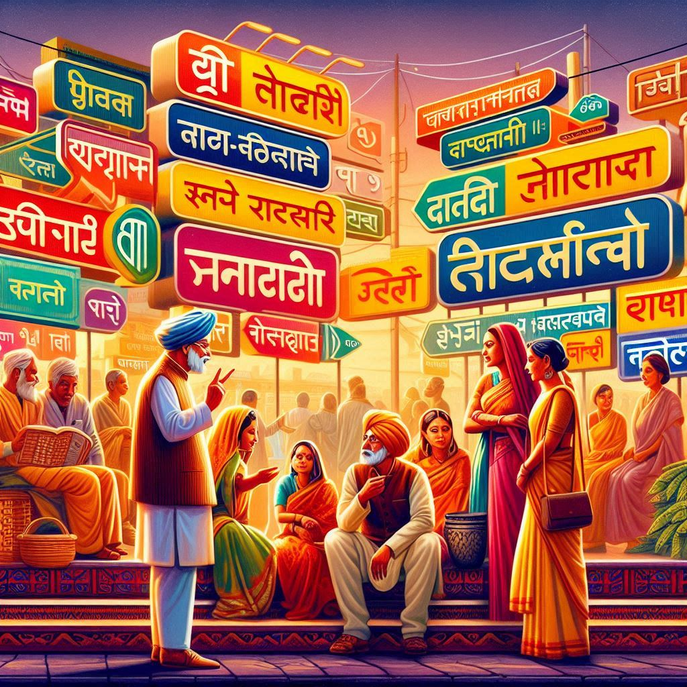
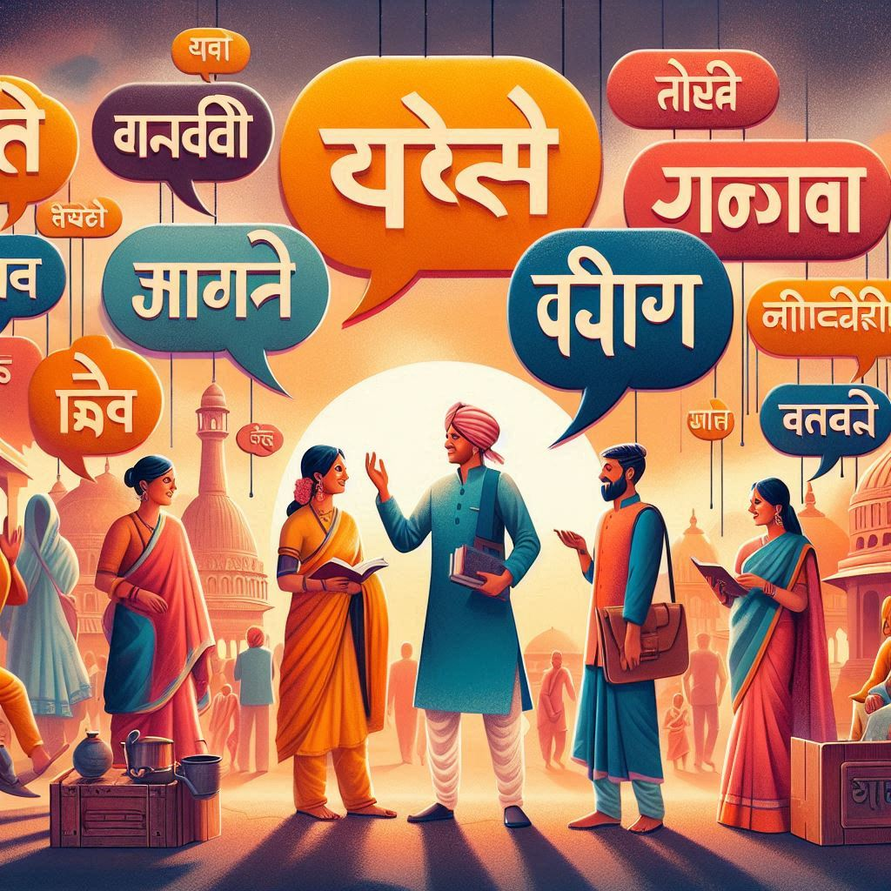

Uttar Pradesh is a linguistically diverse state, home to several languages and dialects that reflect its rich cultural heritage. Here’s an overview of the languages spoken in Uttar Pradesh:
1. Hindi
- Dominant Language: Hindi is the most widely spoken language in Uttar Pradesh and serves as the official language of the state. It is used in government, education, media, and everyday communication.
- Dialects: Various dialects of Hindi are spoken across the state, including Awadhi, Braj, and Bundeli. Each dialect has its unique characteristics and cultural significance.
2. Urdu
- Significant Presence: Urdu is widely spoken, especially in areas with a substantial Muslim population, such as in cities like Lucknow and Agra. It has a rich literary tradition and is used in poetry, music, and cultural expressions.
- Cultural Influence: The influence of Urdu is evident in the art, literature, and music of the region, particularly in the form of Ghazals and Nazms.
3. Other Languages
- Bhojpuri: Spoken in eastern Uttar Pradesh, Bhojpuri has a strong cultural identity and is recognized for its folk songs and literature.
- Awadhi: A dialect of Hindi spoken in the Awadh region, known for its rich literary heritage and traditional folk songs.
- Farsi and Arabic: These languages have influenced the region's vocabulary, especially in literary and religious contexts, particularly due to historical interactions with Persian and Islamic cultures.
4. Minority Languages
- Punjabi: Due to the migration of Punjabi communities, especially in western UP, Punjabi is also spoken in some areas.
- Sindhi and Bengali: These languages can be found in smaller communities, particularly in urban centers.


5. Script
- Devanagari Script: Hindi and its dialects are primarily written in Devanagari script.
- Perso-Arabic Script: Urdu is written in the Perso-Arabic script, which is distinct from the script used for Hindi.
Conclusion
The linguistic landscape of Uttar Pradesh is a reflection of its historical diversity and cultural richness. Hindi and Urdu dominate the conversation, but numerous dialects and minority languages contribute to the state's vibrant linguistic tapestry. This diversity plays a crucial role in shaping the region's identity, literature, and cultural practices.